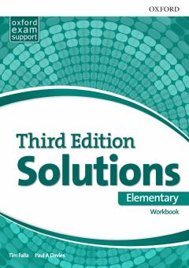

SEIngliz tili boshlang'ich darajasi uchun mo'ljallangan amaliy mashqlar to'plami.
Ushbu kitob ingliz tilini o'rganayotgan boshlang'ich darajadagi o'quvchilar uchun mo'ljallangan mashqlar to'plamidir. U grammatika, lug'at boyligi va til ko'nikmalarini mustahkamlashga qaratilgan amaliy topshiriqlarni o'z ichiga oladi.